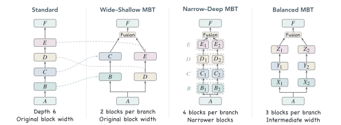
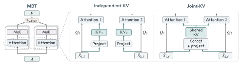
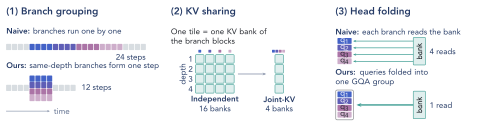

Multi-Branch Transformer
Scaling language models through parallel branches.
1University of Illinois Urbana-Champaign 2Rice University 3University of Michigan 4Cornell University
*Project lead †Core contributors §Last authors
Explore the final models
- Shared block
- Branch block
- One shared KV cache per depth
| Standard | MBT | Change |
|---|
Balanced MBTs with Joint-KV, as trained in the paper. A token moves left to right, and blocks in one column run as one stage. Block height is proportional to residual width. Throughput is total output tokens per second on one H200 with 16K-token inputs and 64 concurrent requests.
A third way to scale, next to width and depth
Transformer language models are usually scaled by making their blocks wider or by stacking more of them. We study a complementary option, branching: the parallel composition of full Transformer blocks.
A Multi-Branch Transformer (MBT) runs the input through a few shared blocks, splits into independently parameterized branches that each remain a sequence of full blocks, fuses the branch outputs, and finishes with shared blocks. Every token passes through every branch.
In controlled pretraining at four mixture-of-experts scales, from 0.8B to 2.1B total parameters, MBTs reach lower validation loss than sequential Transformers at comparable training compute. With Joint-KV cache sharing and an inference engine that exploits the branch structure, they also decode faster.
- up to 1.26×training body compute a standard Transformer needs to match our final models, from fitted curves
- up to 34%less KV-cache storage
- up to 51.4%higher decoding throughput on one H200 GPU
Three ways to spend the same compute on branches
The shared initial and final blocks, the prelude and coda, stay as they are. The middle of the stack becomes K branches. At each token position the branch outputs are normalized, concatenated, and projected back to the shared width; that one linear map is the whole fusion step.
Relative to a standard Transformer at comparable training compute, there are three natural allocations. Wide–Shallow keeps the original block width and redistributes the middle blocks across branches. Narrow–Deep keeps the original sequential depth along each branch and narrows the blocks. Balanced sits between the two, adjusting branch width and depth together.

How much of the stack can run in parallel?
We start with two Wide–Shallow branches, where parameters and training FLOPs stay almost identical to the standard model, and sweep the fraction of blocks placed in the branches from 0% (standard) to 100% (fully branched).
All four scales trace the same U-shaped curve. The lowest loss sits near one third of the blocks, 0.025 to 0.031 below Standard. Loss then rises slowly and only returns to Standard's level when close to four fifths of the blocks are in parallel.
- about 1/3of blocks in two branches gives the lowest loss (28.6% to 37.5% across scales)
- 78% to 80%of blocks in branches still matches Standard, estimated by interpolation
- 1.23×body compute for Standard to match the best 2-branch MBTs, from fitted curves
Two-branch allocation across scales
Validation loss relative to the same-scale Standard; lower is better
Gains on all nine zero-shot tasks
Accuracy gain in percentage points, averaged over W1 to W4
From two branches to four
Do the gains survive more branches? We keep half of the blocks in the shared prelude and coda and reorganize the middle into 2, 3, or 4 branches, in both Wide–Shallow and Balanced form, at matched training compute.
Going from 2 to 3 or 4 branches changes validation loss by less than 0.006 on average, and every configuration stays below Standard. Balanced MBTs are better than their Wide–Shallow counterparts at every scale and branch count, with a lower fitted curve throughout.
More branches therefore expose more parallelism at essentially the same quality, and how width and depth are divided inside the branches matters.
Loss against training body compute
Points are trained models at W1 to W4; lines are fitted power laws
Joint-KV: one cache per depth, shared by all branches
By default every block in every branch builds its own keys and values, so more branches mean more KV caches. At long contexts, reading those caches dominates decoding time.
Joint-KV has all branches at the same depth construct one shared KV cache from their concatenated inputs, while each branch keeps its own queries. For K branches this cuts cache storage in the branch region to 1/K of independent caches, with the same projection parameters and FLOPs.
Sharing is also the better way to compress. In a controlled two-branch comparison at equal cache size (W1–W4), Joint-KV reaches 0.011–0.012 lower validation loss than giving each branch its own smaller cache.
Joint-KV changes the model and is used in training. The inference engine then changes only how the model is executed.

An engine that uses the branch structure
Our engine, built on nano-vLLM, serves Standard and MBTs with the same kernels and cache manager. Two mechanisms turn the branch structure and the shared caches into faster decoding.
Branch grouping runs same-depth blocks of all branches as one batched stage, so the number of sequential stages equals the model's depth, not its block count. A 4-branch W3 model has 24 blocks but needs 12 stages, against 16 for Standard.
Head folding folds the branch dimension into the query-head dimension, so all branches read the shared cache in a single grouped-query attention call. Each query head keeps its own softmax.

Final models: lower loss and faster decoding
Our final recipe combines Balanced MBTs with Joint-KV. We trained it with 2, 3, and 4 branches at all four scales. All 12 models reach lower validation loss than the same-scale Standard while storing a smaller KV cache, and Joint-KV tracks independent caches closely.
At a validation loss of 2.5, the fitted Standard curve needs 1.26×, 1.18×, and 1.16× the training body compute of the 2-, 3-, and 4-branch final models. Averaged over scales and nine zero-shot tasks, they score 55.92%, 55.56%, and 55.47%, against 54.23% for Standard.
- 12 of 12final models beat the same-scale Standard in validation loss
- 19% to 34%smaller full-model KV cache than Standard
- 1.12× to 1.50×decode speedup with 4 branches, averaged over scales, from one 4K request to 16 concurrent 128K requests
Quality against decoding speed
Up and to the right is better; marker shape is the scale
Validation loss and KV-cache saving
Balanced MBTs with Joint-KV; lower loss is better
| Scale | Standard | 2-branch | 3-branch | 4-branch |
|---|
Decode speedup over Standard
Mean over W1 to W4 on one H200; every request generates 1K tokens
Cite
@article{li2026mbt,
title = {Multi-Branch Transformer},
author = {Li, Gaotang and Chen, Lingjie and Deng, Chunyuan and Xu, Zhiwei and
Chen, Hongzheng and He, Jingrui and Wang, Yingheng and Tong, Hanghang},
year = {2026},
note = {Preprint}
}
The entry will be updated with the arXiv identifier at release.